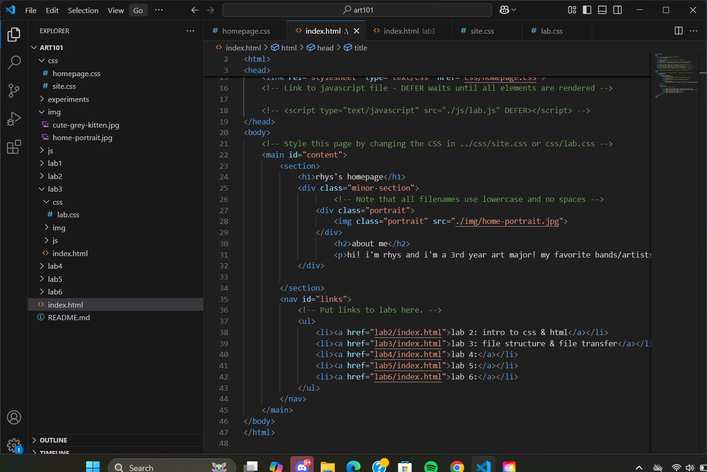

lab 3 - file structure & file transfer
challenge
the main task for this lab was to organize our file setup, which was already done thanks to the template, and insert images into the homepage and this lab page.
problems
getting the images in the site was easy, but i ran into some trouble trying to align them to the left or right and have text surrounding them. luckily, my partner knew what to do and was able to help me out! i had similar issues with the images not sizing down properly within the lab page, but again they were able to help! thanks zhou :3
reflection
my partner's site really inspired me to try and customize my page more and make it more interesting than just the default/required setup, so i spent a lot of time working to try and make mine extra pretty like theirs! again, big shout out to them for letting me take inspiration from their setup and look at their code. i think all the time and effort i spent was worth it, and i hope to keep that drive and inpiration with me as i continue to tweak my site until it's something i can be really proud of!
results
img: file structure in code editor
img: html source code
img: site test in local browser